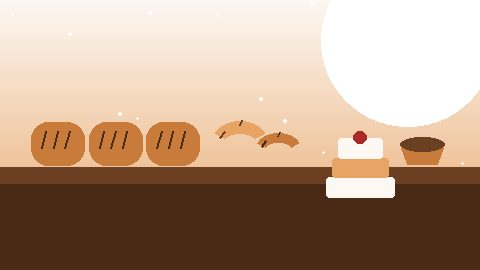
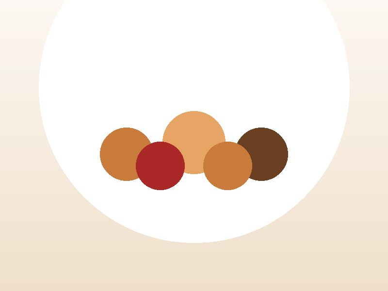
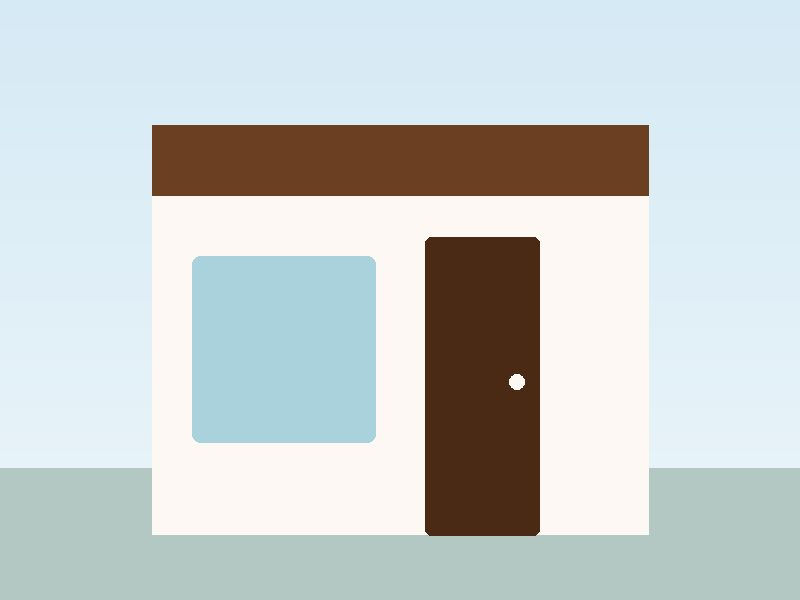

Fresh Products
Our bakery provides freshly prepared breads, pastries and cakes, baked in small batches throughout the day.
Welcome to Urban Crumb Bakery, where we create fresh breads, pastries, celebration cakes and catering treats for our customers.
We believe that great food brings people together. Our products are prepared with care for everyday moments, celebrations and special occasions.

Three reasons our customers keep coming back.
Our bakery provides freshly prepared breads, pastries and cakes, baked in small batches throughout the day.
We create cakes for birthdays, celebrations and special occasions, decorated to your brief.

We provide catering options for meetings, parties and other events, with delivery across Pretoria.

Find us in Pretoria Central and at Menlyn. Both branches bake fresh every morning and take custom orders for collection or delivery.
Quick answers about ordering from Urban Crumb Bakery.
Please allow at least 48 hours for custom cakes and catering. Wedding cakes need at least two weeks and a consultation.
Yes. We deliver catering orders across Pretoria. Delivery fees depend on distance and are confirmed when you enquire.
We can adapt many items. Tell us about allergies in your enquiry. Our kitchen handles wheat, dairy, eggs and nuts, so we cannot guarantee allergen-free products.
Monday to Friday 07:00 to 18:00, Saturday 08:00 to 16:00 and Sunday 08:00 to 14:00. See our contact page for both branches.